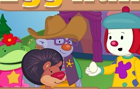

All About Me
What is your name?
Daniela Rodriguez
Where are you from?
Miami, Fl
When is your birthday?
August 1, 2000
Why did you choose to study Communication Design?
Because I believe there is a lot that communication design has to offer as images, also I just love visual storytelling and communicating ideas through images.
What are you most inspired by?
besides the poeple around me... music inspires me.
What has been your favorite class so far? Why?
my first studio/seminar
What are you hoping to learn in this class?
I am praying that this time I will actualy understand code and will be able to make my ideas come alive.
What do you like to do in your spare time?
If i'm not feeling lazy, I like to explore ny with friends...go to little art galleries and book stores
When you imagine a graphic designer, what do you think they do on a day to day?
Live a colorful life with lots of sunlight in their room, sit infront of their computer, and collaborate with others
When you imagine a developer, what do you th ink they do on a day to day?
Oh god idk
Where do you see yourself after graduating? What kind of job do you want to have?
I want to be able to work with a creative team and build interactive environments or just mak ewhatevr I feel like making that day.
Do you consider yourself an artist, a designer, both, or neither?
Sometimes I feel more like an artist than a designer. I haven't felt like a designer in a while.
What kind of design classes have you taken before this one?
I went to an art highschool where I studied graphic design for 3 years.
Do you know most of the students in our class already?
I only know one
List your favorite typefaces.
What are you top 3 favorite colors?
Your answer goes here!
- Unordered item #1
Which artists do you like?
Your answer goes here!
List out some music that you like to listen to
Your answer goes here!
Did anything interesting happen over winter break?
Have you ever built a website?
Your answer goes here!
Do you have any questions for me?
After graduating Parsons how did you start working in the field? What were your favorite jobs?
What is your first memory of using the internet?

Do you have a favorite place to visit?
Your answer goes here!
Do you speak any other languages?
Your answer goes here!
What is your favorite food?
Your answer goes here!
What is your favorite animal?
Your answer goes here!
Do you have a pet?
Your answer goes here!
Is there any other information you’d like me to know?
Your answer goes here!